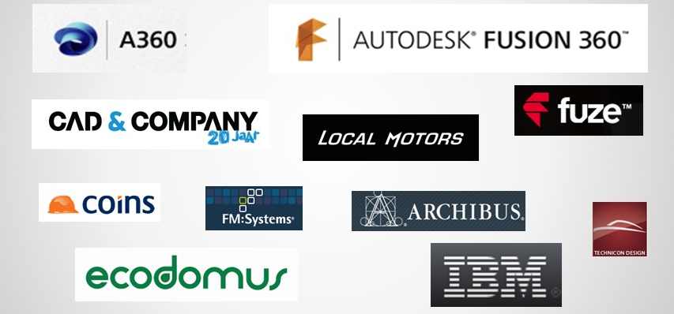

三维模型网页展示
A360 Viewer
by Autodesk
卢石碧 Aaron Lu
开发技术顾问
imaaronlu AaronLuu
定制开发展示
应用场景
- 物业管理
- 电子商务商品展示
- 展品在线虚拟体验
- 生产管理、设备运行监控
- 游戏、虚拟现实
- …
支持的格式
ipt, neu, stla, stl, xlsx, jt, jpg, skp, prt, dwf, xls, png, sldasm, step, dwg, zip, nwc, model, sim, stp, ste, f3d, pdf, iges, dwt, catproduct, csv, igs, sldprt, cgr, 3dm, sab, obj, pptx, cam360, jpeg, bmp, gbxml, exp, ppt, doc, wire, ige, rcp, txt, dae, x_b, 3ds, rtf, rvt, g, sim360, iam, asm, dlv3, x_t, pps, session, xas, xpr, docx, catpart, stlb, tiff, nwd, sat, fbx, smb, smt, ifc, dwfx, tif
闪光点
- 支持你知道的所有三维格式!
- 支持超大模型
- 强大开放的API，可以任性的玩
谁在用？
